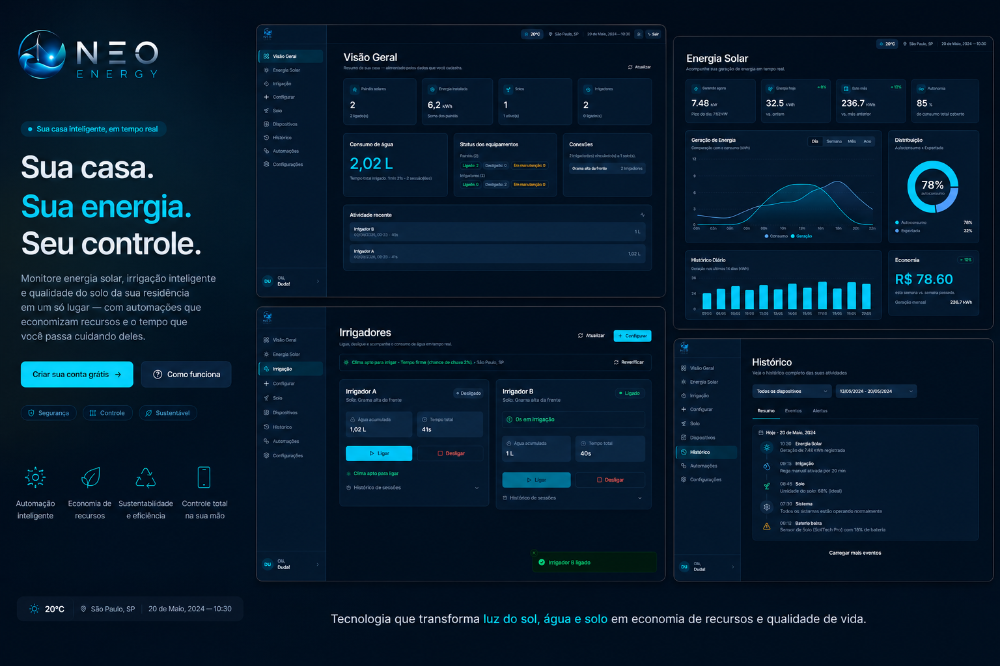

Desenvolvedor Back-end · Java, Spring Boot, APIs REST,
Docker, PostgreSQL, AWS & IA aplicada · Consultor de Implantação
Jr na Faktory Softwares.
Dois anos construindo na área de tecnologia — do código à validação do produto.
Atuo na linha de frente testando e colaborando com QA e devs para
entregar software confiável, ao mesmo tempo em que evoluo como engenheiro
back-end e represento a Facens, maior universidade de Sorocaba.
Dois anos construindo na tecnologia — do código limpo à validação
de produto. Hoje, contribuo na linha de frente do desenvolvimento,
do QA e da implantação; amanhã, lidero arquitetura.
Sou estudante de Análise e Desenvolvimento de Sistemas no
Centro Universitário Facens — maior universidade de
Sorocaba, da qual sou representante. Atuo como
Consultor de Implantação Jr na Faktory Softwares,
depois de iniciar o caminho como estagiário no mesmo time.
Na prática, trabalho diretamente no produto web mais novo da
empresa: encontro bugs, executo testes de validação, abro chamados
e colaboro de forma integrada com o time de QA e com os
desenvolvedores no ciclo de melhoria contínua. Em paralelo,
construo APIs REST em Java/Spring Boot, modelo dados em PostgreSQL,
padronizo ambientes com Docker e estudo arquitetura de software, cloud e
uso estratégico de inteligência artificial.
Procuro crescer sólido — combinando engenharia, comunicação e visão de
produto — para entregar software que melhora operações reais.
— assinaturaPedro C.
0anos
De experiência prática na área de tecnologia
0+
Certificações conquistadas em tecnologia
0x
Representante oficial do Centro Universitário Facens
0%
Em constante evolução — buscando crescer sólido
/ 02
Atuação atual
FAKTORY SOFTWARES · SOROCABA · SP
No dia a dia, atuo no desenvolvimento e validação do produto web
mais recente da empresa — combinando olhar de engenharia, QA e
consultoria de implantação. Trabalho integrado com devs e analistas de
qualidade no ciclo completo de melhoria contínua.
01
Testes & validação de produto
Executo testes exploratórios e de validação no produto web em desenvolvimento,
identificando erros, comportamentos inconsistentes e oportunidades de
melhoria antes que cheguem ao cliente.
02
Colaboração com QA & devs
Abro chamados estruturados, documento evidências e converso diretamente
com o time de QA e os desenvolvedores para acelerar correções e refinar
requisitos técnicos.
03
FOCO PRINCIPAL · MEU CARGO
Consultoria & implantação de ERP
Atuação central da minha carreira hoje: presto consultoria
direta a clientes e conduzo treinamentos para que o sistema seja implantado
com eficiência — atualmente em grandes empresas do ramo de indústria
de esquadrias, conduzindo do levantamento de requisitos à entrega
final em produção.
Domino o fluxo principal de ERP com forte conhecimento
fiscal e de negócios — o que me prepara
para escalar essa expertise a clientes de qualquer ramo. Visão de
futuro: levar minha atuação para indústria, comércio, serviços e
além, sempre transformando regras de negócio em sistema confiável.
Consultoria
Treinamento
Fluxo de ERP
Conhecimento fiscal
Regras de negócio
Parametrização
Stakeholders
04
CRIATIVIDADE APLICADA
Conteúdo & soluções criativas
Combino sensibilidade visual e técnica para apoiar a comunicação do produto
e da empresa. Crio ideias, desenvolvo páginas
HTML sob medida, desenho designs alinhados à
marca e produzo gravações de conteúdo que conectam
sistema, time e usuários.
Esse repertório criativo me permite entregar soluções fora da caixa —
materiais de apoio, peças de comunicação técnica e protótipos rápidos —
ampliando o impacto do trabalho técnico além do código.
Páginas HTML
Design
Gravação de conteúdo
Comunicação técnica
Ideação
Prototipação
/ 03
Especialização & certificações
Foco técnico em engenharia de software com ênfase em
back-end — somado a mais de 100 certificações conquistadas em
tecnologia.
100+Certificações conquistadas
Abaixo, o destaque da minha especialização técnica e uma curadoria das
certificações mais relevantes para minha atuação profissional.
ENGENHARIA DE SOFTWARE · FOCO PRINCIPAL
Back-end · Java, Spring Boot & APIs REST
Minha especialização técnica e direção de carreira. Atuo no
desenvolvimento de APIs REST escaláveis em
Java/Spring Boot, com integração a bancos
relacionais, segurança, testes e ambientes containerizados.
Trajetória que combina formação acadêmica em ADS na Facens,
atuação prática diária no produto da empresa e estudo contínuo de
arquitetura, padrões de projeto e boas práticas de engenharia de software.
Facens · ADS & prática profissionalFOCO PRINCIPAL
CLOUD COMPUTING · AWS
AWS Cloud Practitioner
Certificação oficial da Amazon Web Services — fundamentos de computação
em nuvem, segurança, arquitetura distribuída e gestão de custos da
plataforma líder mundial.
CIBERSEGURANÇA
Fundamentos de Cibersegurança
Princípios de proteção, identificação de vulnerabilidades e práticas
de defesa aplicáveis a ambientes corporativos e ao desenvolvimento.
LIDERANÇA · FACENS
Líder de Turma
Representação acadêmica oficial no Centro Universitário Facens —
comunicação institucional, mediação e tomada de decisão.
Outras conquistas relevantes
Implantação de Serviços de IA em Nuvem · Senai SP
Empreendedorismo · Senai SP
Informática Avançada · Nippo
Inglês como Segundo Idioma · Pearson / Nippo
+ dezenas de outras certificações técnicas
/ 04
Stack técnica
Um conjunto de tecnologias que utilizo no dia a dia para construir, validar e
sustentar sistemas — do back-end ao deploy, passando por
dados, cloud, IA e colaboração.
A.
Back-end & APIs
Arquitetura e desenvolvimento de APIs REST escaláveis em Java/Spring Boot, com foco em manutenibilidade, segurança e documentação clara.
Java
Spring Boot
Spring Security
JPA / Hibernate
REST
JWT
B.
Banco de Dados
Modelagem relacional, otimização de queries e versionamento de schema. PostgreSQL como base preferida — integridade e performance acima de tudo.
PostgreSQL
MySQL
SQL avançado
Modelagem ER
Flyway
C.
DevOps
Containerização, ambientes padronizados e fundamentos de pipelines para preparar aplicações para escala real e deploy contínuo.
Docker
Docker Compose
Linux
CI/CD básico
Shell
D.
Cloud & Serviços
Fundamentos sólidos em computação em nuvem com AWS — Cloud Practitioner certificado — e estudos contínuos em arquitetura distribuída.
AWS
EC2 / S3
IAM
Cloud Practitioner
Implantação de IA em nuvem
E.
Inteligência Artificial
Uso estratégico de IA aplicada ao desenvolvimento — prompt engineering, automação e ferramentas que aceleram entregas sem abrir mão de qualidade.
Prompt Engineering
IA aplicada
LLMs
Automação
Ferramentas de produtividade
F.
Git & GitHub
Versionamento disciplinado, branches organizadas, pull requests revisáveis e cultura de colaboração — base para qualquer time de engenharia.
Git
GitHub
Pull Requests
Code Review
Conventional Commits
G.
QA, validação & soft skills
O diferencial que carrego: testes de produto, abertura de chamados, colaboração com QA e devs, comunicação técnica, condução de stakeholders, escrita de documentação e tradução de regras de negócio em solução técnica.
Testes exploratórios
QA colaborativo
Bug tracking
Documentação técnica
Clean Code
SOLID
Levantamento de requisitos
Comunicação técnica
/ 05
Trajetória
Experiência
mai 2026→presente
Consultor de Implantação Jr
Faktory Softwares · Sorocaba, SP
Apoio empresas em todas as etapas da implantação e operação do ERP — do levantamento de requisitos à parametrização e suporte supervisionado. Elaboro manuais, fluxos e documentos que aceleram a adoção do sistema.
fev 2026→mai 2026
Estagiário de Implantação
Faktory Softwares · Sorocaba, SP
Início no time de implantação, atuando em análise de processos, parametrização do sistema e geração de conteúdo técnico para redes sociais.
fev 2025→fev 2026
Auxiliar de Logística
Human Concierge Logística · Sorocaba, SP
Vivência operacional que afiou disciplina de processos, trabalho em equipe e controle de execução — habilidades hoje aplicadas em soluções técnicas com foco em eficiência.
Duas peças que representam meu trabalho técnico. Cada uma com espaço dedicado
para descrição, mídia, vídeo (incluindo vídeos não listados do YouTube) e links.
01PROJETO
Em destaqueBackend · Refatoração · Cloud
CultivaClub
Refatorei o CultivaClub de uma arquitetura distribuída em
três microsserviços (Usuários, Objetos e API Gateway) para
um monolito modular em Spring Boot — preservando
boundaries de domínio enquanto simplifica deploy, reduz custo
operacional e acelera entregas.
Backend em Java 21 + Spring Boot rodando na
Render, frontend em Vercel,
persistência em PostgreSQL serverless (Neon) com dois
databases lógicos e pools Hikari dedicados.
UptimeRobot mantém a instância aquecida via
/actuator/health a cada 5 minutos.
Java 21
Spring Boot
JPA / Hibernate
PostgreSQL
Neon
Render
Vercel
REST API
Monolito Modular
HikariCP
Fig. 01 · Vídeo demonstrativo no YouTube — tour completo pela aplicação narrado pelo autor.
ARQUITETURACULTIVACLUB · MONOLITO MODULAR
Fluxo end-to-end: usuário acessa o frontend hospedado na Vercel,
que conversa via REST/JSON com o monolito Spring Boot rodando na
Render (porta :10000). A persistência fica em dois
databases lógicos no Neon PostgreSQL — usuarios
e objetos — cada um com seu pool Hikari dedicado. O
UptimeRobot garante zero cold-start pingando
/actuator/health a cada 5 minutos.
EM DESENVOLVIMENTOVídeo de demonstração em produção — aplicação já no ar
LIVE · v1.0
02PROJETO
No ar · Acadêmico (UPX)Full-stack · Smart Home · Energia
NEO Energy
🚀 O NEO-ENERGY é um sistema de gestão inteligente de
energia renovável e irrigação automática para residências — o
morador tem controle total sobre o consumo de água no jardim e a geração de
energia solar, tudo em um só lugar.
Projeto desenvolvido na disciplina UPX da faculdade, fruto de
meses de dedicação e tecnologia aplicada com propósito. Por trás do dashboard roda
uma API REST em Java 21 + Spring Boot, com deploy em nuvem via
Docker no Render, segurança BCrypt + JWT e três
perfis de acesso — ADMIN, NORMAL e
PRO.
Monitoramento de painéis solares em tempo real
Gestão de irrigadores com registro automático de sessões (tempo + litros)
Histórico completo de água e energia para decisões mais inteligentes
Dashboard moderno com automações, alertas e controle total
Segurança BCrypt + JWT com três perfis: ADMIN, NORMAL e PRO
Java 21
Spring Boot
Spring Security
JWT
JPA
PostgreSQL
Docker
MapStruct
Lombok
Maven

Fig. 02 · Resumo do NEO ENERGY — geração solar, irrigação inteligente e histórico, em tempo real.
Demonstração em vídeo
Em desenvolvimento
Vídeo de demonstração — em breve aquiyoutube · não listado